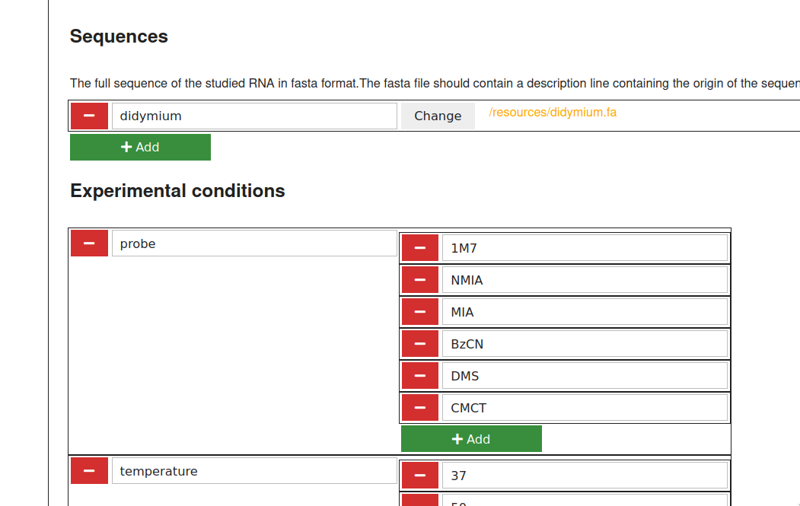

Configuration
To run the pipeline on your project, you must fill in 2 configuration files
config.yamlWhich contains general configurationsamples.tsvThat contains informations about samples and replicates
1. Fill in config.yaml using ipasuite config
Once you generated your project using ipasuite init [project] and enter your project using cd [project]
Launch ipasuite config. Fill in the form into your webbrowser and save.
For detailed information see

2. Fill in samples.tsv
Open your project folder using a file browser
Open samples.tsv in libreoffice calc.
Create conditions columns and comments columns
For each condition declared in ipasuite config you must create a column with the same
identifier in samples.tsv
In addition, you can add arbitrary other columns to your file samples.tsv. These additional columns can contain useful annotations and comments that help to classify and characterize your data, but are otherwise ignored by the IPANEMAP Suite. Each column must have a unique name.
Create a row for each of your experiments: For each experiment, you must create a corresponding row, and fill in the following informations
- id (string)
a unique number as experiment identifier
- rna_id (string)
The identifier for RNA fragment used in this experiment, as declared in the
sequencessection ofipasuite config- ddNTP (ddA, ddT, ddG, ddC)
Indicate the ddNTP used for the sequencing condition of capillary eletrophoresis
- date (date)
Date of the experiment. use YYYY-MM-DD
- replicate (integer)
id for the experiment and the given probing condition this identifier, allows distinguishing the different replicates for a given condition. Must be unique for a given condition.
If you activated «subsequence» in ipasuite config, you must also fill in rt_begin_pos and rt_end_pos:
rt_begin_pos (integer)
: Position of the first nucleotide after reverse transcriptase primer used for this
sample
rt_end_pos (integer)
: Position of the last nucleotide reachable by the reverse transcriptase (which is
most of the time 0)
Since Reverse transcription occurs from 3’ to 5’ rt_begin_pos > rt_end_pos
You must fill in every condition column declared in ipasuite config.
(A missing value in one of the mandatory or condition columns will cause an error when launching ipasuite run)
Fill in file information
For each row, you must give information about where to find raw data :
- probe_file (relative file path)
relative path to the sequencing file corresponding to this shape sample.
- control_file (relative file path)
relative path to the file sequencing file corresponding to the control (DMSO) file of this shape sample.
- reference_qushape_file (file path) (optional)
If using Reference QuShape project : will be used in QuShape to pre-generate peak calling and alignment
- qushape_file (optional)
Direct import of QuShape projects : Filling this field let you to import readily treated QuShape data. If this field specifies a file, IPANEMAP Suite will try to import it as QuShape file, unless there is already a corresponding file in
results/2-qushape. If a QuShape file is specified,probe_fileandcontrol_fileare ignored. The file can be specified with a path relative to the path prefix as specified in the configuration of the project.- reference_qushape_file
Specify a reference file for QuShape. Use this to specify a template for QuShape.
- map_file
Direct import of map files : This field let you to import normalized reactivity data from other sources (e.g. ShapeMapper2) as map files. If a file is specified, IPANEMAP Suite imports it and ignores all other specifications of data for the experiment. The file can be specified with a path relative to the path prefix as specified in the configuration of the project.
- discard
This columns allows you to mark experiment data rows that should be ignored by IPANEMAP Suite. This can help to keep a record of disregarded data in
samples.tsvor temporarily take out data.